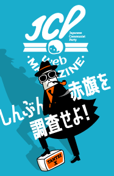
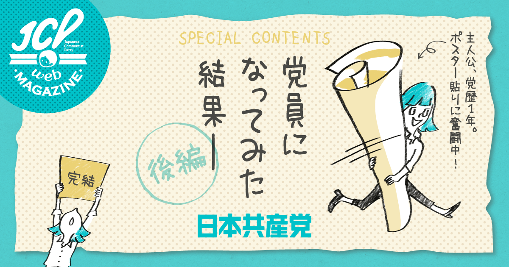
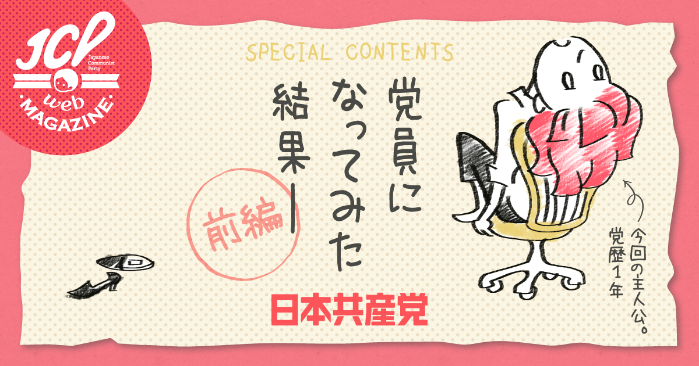

お問い合わせ
入党の申し込み
文字サイズ
ENGLISH PAGE
MENU
政策
政策
政策トピックス
テーマ別政策
国政選挙政策
議員
議員
衆議院議員
参議院議員
地方議員
予定候補
党紹介
党紹介
綱領
規約
あゆみ
大会決定
機構と人事
党事務所の住所
ダウンロード
ダウンロード
署名用紙
ビラ・チラシ
ポスター
プラスター
バナー
政策・提言全文
赤旗写真ニュース
イラスト
図表・グラフ
パンフ
声のダウンロード
エントリー
エントリー
JCPサポーター
入党のご案内
募金・遺贈の相談
赤旗見本紙申し込み
赤旗購読申し込み
雑誌・書籍
グッズ
共産党の
キホンのキホン
日本共産党のことを
ざっくりとご紹介します
詳細はこちら

JCP
web
MAGAZINE
しんぶん赤旗を
調査せよ！
詳細はこちら
共産党の魅力ゆるく伝える
JCPwebMAGAZINE


一覧を見る
声 明
2021.7.23
「五輪より命が大切」の立場にたち、中止の決断を求め続ける 志位和夫委員長
／英語版（
English
）
録 画
2021.7.20
全国都道府県委員長会議の幹部会報告（YouTube）
９９th
2021.7.15
日本共産党創立99周年にメッセージを寄せていただきました
しんぶん赤旗